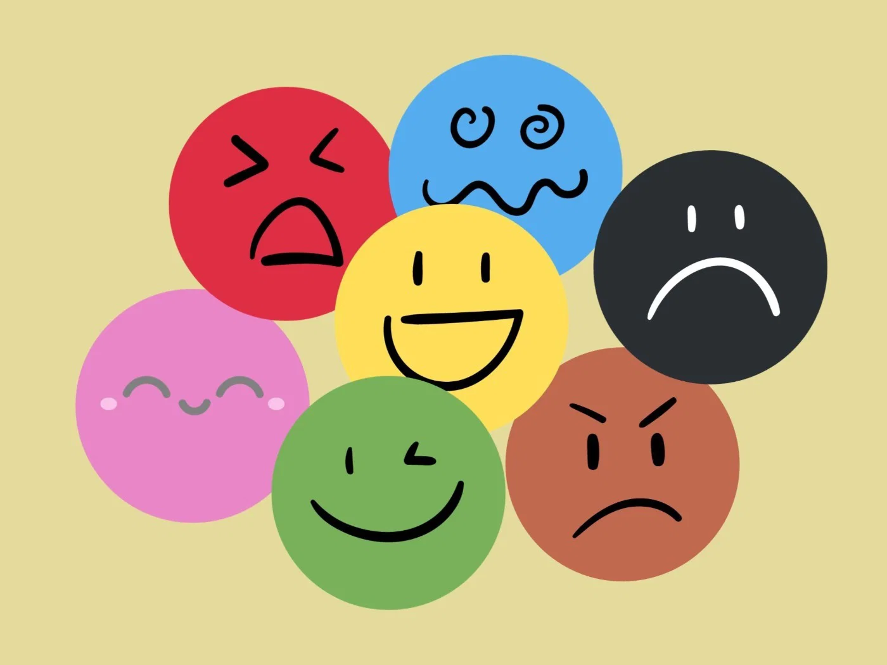

Son naturales
Todas las personas sienten emociones. Aparecen de forma automática y forman parte de nuestra supervivencia y vida social.
Bienestar emocional
Las emociones son respuestas naturales que influyen en la manera en que pensamos, actuamos y nos relacionamos con los demás. Aprender a reconocerlas nos ayuda a comprender nuestras necesidades y a cuidar nuestra salud mental.
Conoce las emociones
Conceptos fundamentales
Una emoción es un proceso que se produce como reacción a una situación, una persona, un recuerdo o incluso un pensamiento. Incluye cambios físicos, ideas, sensaciones y conductas. No existen emociones buenas o malas: todas tienen una función y pueden ofrecer información valiosa.
Todas las personas sienten emociones. Aparecen de forma automática y forman parte de nuestra supervivencia y vida social.
Aumentan y disminuyen. Identificarlas ayuda a comprender que una emoción difícil puede cambiar con apoyo y tiempo.
Hablar, escribir o realizar una actividad saludable permite expresar una emoción sin lastimar a otros ni a uno mismo.
Conocer para comprender
La alegría es una emoción agradable que surge cuando vivimos algo satisfactorio, logramos una meta o compartimos con personas que queremos. Nos aporta energía, aumenta la motivación y favorece la conexión con los demás.
Cómo se manifiesta: sonrisa, entusiasmo, sensación de ligereza y deseos de compartir.
Cómo cuidarla: disfrutar el momento, reconocer los logros y agradecer a quienes participan en ellos.
La tristeza aparece ante una pérdida, una decepción o una situación dolorosa. Es una señal para detenernos, buscar consuelo y darle importancia a lo que hemos vivido.
Cómo se manifiesta: llanto, poca energía, aislamiento temporal, falta de apetito o dificultad para concentrarse.
Cómo cuidarla: hablar con alguien de confianza, escribir lo que sentimos y permitirnos descansar sin juzgarnos.
El miedo nos alerta ante posibles peligros y prepara al cuerpo para protegernos. Puede ser útil si nos ayuda a actuar con precaución, pero puede dificultar la vida cuando aparece demasiado o sin una amenaza real.
Cómo se manifiesta: ritmo cardíaco acelerado, tensión, sudoración, pensamiento rápido o deseo de huir.
Cómo cuidarlo: identificar qué provoca el miedo, respirar lentamente, buscar apoyo y enfrentar situaciones difíciles paso a paso.
El enojo surge cuando percibimos una injusticia, una amenaza o la falta de respeto a nuestros límites. Puede ayudarnos a defendernos, pero es importante expresarlo sin agresiones ni palabras que lastimen.
Cómo se manifiesta: tensión muscular, calor, irritabilidad, voz fuerte o impulsos para actuar rápidamente.
Cómo cuidarlo: alejarse temporalmente, respirar, nombrar la emoción y comunicar el problema con frases tranquilas.
La sorpresa aparece cuando ocurre algo inesperado. Permite dirigir rápidamente nuestra atención hacia una situación nueva. Puede ser agradable, desagradable o neutral según el contexto.
Cómo se manifiesta: ojos abiertos, cejas elevadas, respiración rápida y curiosidad.
Cómo cuidarla: observar la situación, pedir tiempo para comprenderla y decidir qué acción corresponde.
La calma es un estado emocional en el que el cuerpo y la mente tienen menor tensión. No significa ausencia de problemas, sino la capacidad de enfrentar una situación con concentración y equilibrio.
Cómo se manifiesta: respiración pausada, relajación muscular y pensamientos más claros.
Cómo cultivarla: practicar pausas, escuchar música suave, caminar, meditar o respirar profundamente.
Información útil
Cuando podemos nombrar lo que sentimos, expresamos nuestras necesidades con mayor claridad y evitamos confusiones.
Las emociones aportan información, pero no deben dirigir todas nuestras acciones. Reconocerlas nos permite pensar antes de reaccionar.
Comprender los sentimientos propios ayuda a reconocer mejor los sentimientos de otras personas y a practicar la empatía.
Negar emociones no las elimina. Expresarlas de forma sana reduce la tensión y permite pedir apoyo cuando hace falta.
Prácticas saludables
Hacer una pausa antes de responder permite que el cerebro piense con mayor claridad.
Decir “me siento preocupado” o “estoy triste” ayuda a diferenciar la emoción del problema.
Inhalar y exhalar lentamente puede disminuir la tensión corporal y regular la ansiedad.
Preguntar qué situación, pensamiento o recuerdo produjo la emoción ayuda a encontrar soluciones.
Las emociones no obligan a actuar. Podemos elegir conductas respetuosas y responsables.
Compartir con una persona segura puede aliviar la carga emocional y aportar nuevas ideas.
Desarrollo personal
La inteligencia emocional es la capacidad de reconocer, comprender y manejar emociones propias y ajenas. No es una habilidad con la que nacemos completamente, sino que puede desarrollarse con práctica, reflexión y experiencias saludables.
Reconocer qué sentimos y por qué.
Responder con calma y responsabilidad.
Usar las emociones para alcanzar objetivos.
Comprender la perspectiva de otras personas.
Comunicar, cooperar y resolver conflictos.
Pide ayuda
Si una emoción dura mucho tiempo, afecta el sueño, los estudios o las relaciones, es importante hablar con un adulto de confianza, orientador escolar, psicólogo o profesional de salud. Pedir ayuda demuestra responsabilidad y cuidado personal.